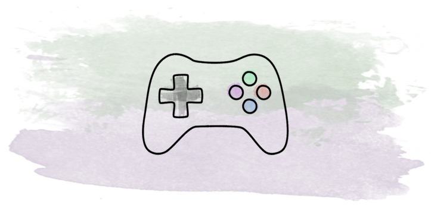

INDEPENDENT ARTICLE · 2026Meaningful Learning in Commercial Videogames
A conceptual framework exploring how commercial videogames can support meaningful learning through interconnected dimensions of player experience.
Manuscript under review